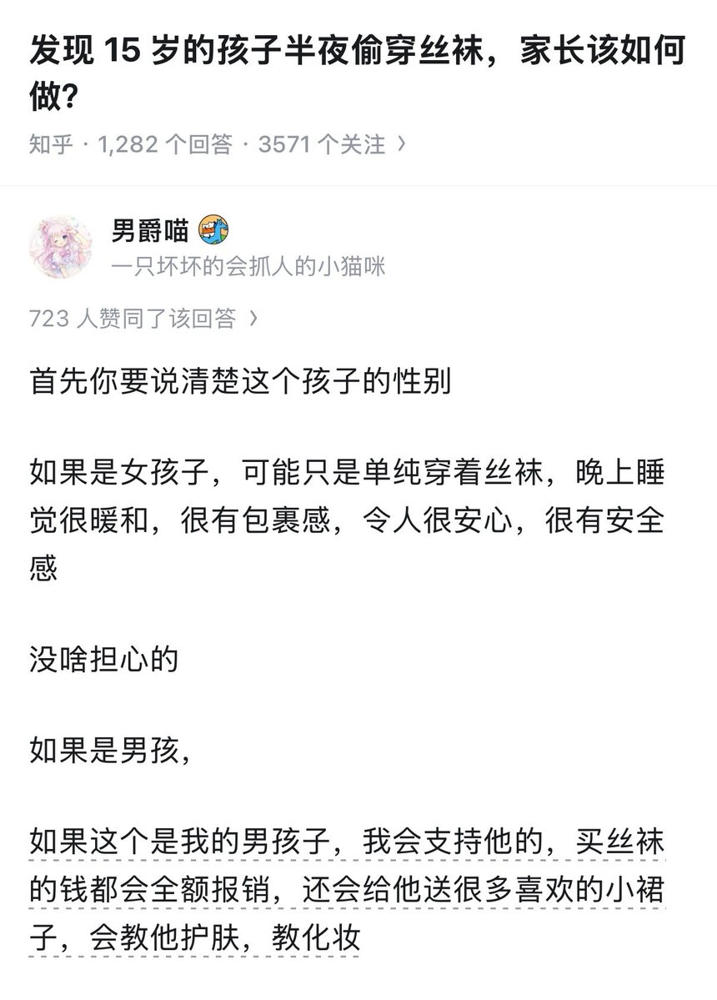

奶昔🥤
@realNyarime
以前的欧洲贵族都是穿白丝的，认真的说我长时间久坐也会腿麻所以也开始尝试一些弹力较大的裤袜，除了有包裹感还能缓解腿麻何乐不为
不过买小裙子，都这种年代了穿衣自由，至于说丝袜这种东西得看是哪种。比如我喜欢厚黑，是因为我觉得厚点不风俗，反而配着jk制服很优雅
当然每个人的见解都不一样，如果说穿丝袜都有罪，那把机场那些穿黑丝的都当成妓女当 mypc 拘了吧

草莓泡芙🍀
@SnozakiSakura
生儿育女～ https://t.co/j54ukz6XoU